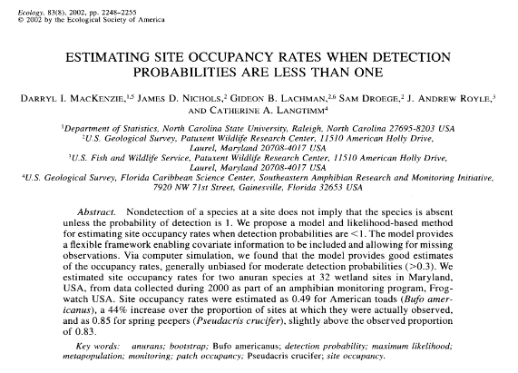
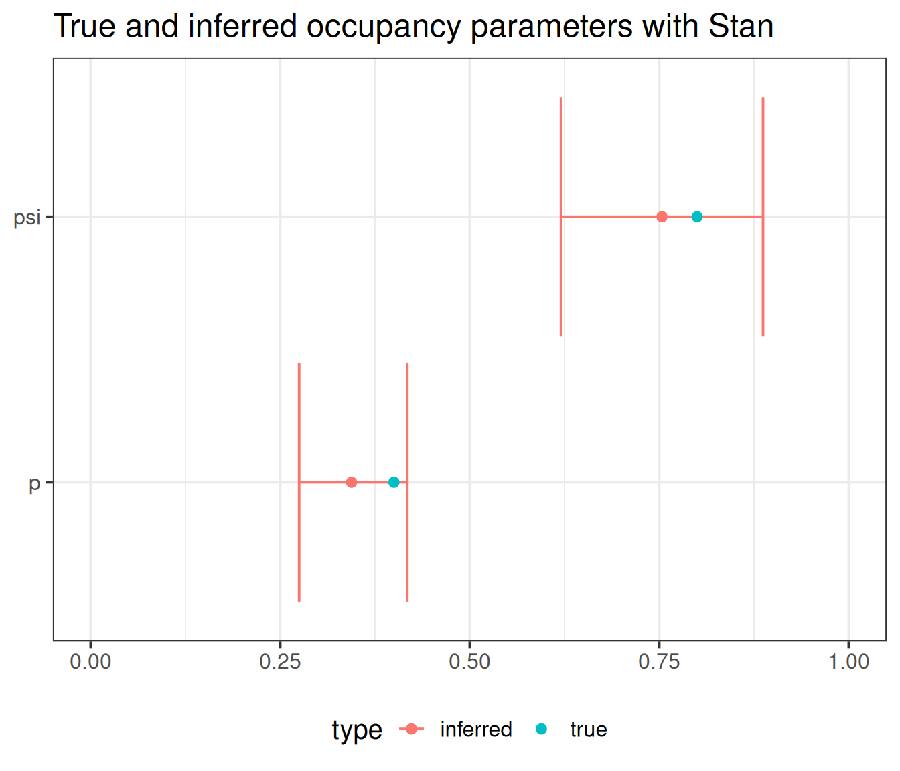

set.seed(42)
M <- 100 # Number of sites
p <- 0.4 # Detection probability
psi <- 0.8 # Occupancy
# Simulate a number of visits for each site
nvisit <- rpois(n = M, lambda = 3)
nvisit[nvisit == 0] <- 1 # Don't allow zero visits
# Initialize vectors
z <- vector(mode = "numeric", length = M)
y <- vector(mode = "list", length = M)
for (i in 1:M) { # For each site
# Simulate true presence/absence at site i
zi <- rbinom(n = 1, size = 1, prob = psi)
# Simulate observed presence/absence at site i
# for all visits
yij <- rbinom(n = nvisit[i],
size = 1, prob = p*zi)
z[i] <- zi # True sites states
y[[i]] <- yij # Detections
}Table of contents
Introduction
Simple occupancy model
Occupancy models in R
Conclusion
References
Introduction
Presence \(\neq\) detection
Present, but not detected
Introduction

- First published by MacKenzie et al. (2002) in the context of species occurrence modelling
- Many extensions: dynamic occupancy (MacKenzie et al. 2003), multiple species (Rota et al. 2016), continuous detection process (MacKenzie et al. 2003)…
- Here: original simple occupancy model
Simple occupancy model
Model

For site \(i\) and visit \(j\): \[ y_{ij} \sim Bern(z_i~p) \] \[ z_i \sim Bern(\psi) \]
Occupancy models in R
Simulate occupancy models in R
Simulate occupancy models in R
- True proportion of occupied sites (\(z_i = 1\))
Inference hypotheses
- Repeated visits (parameter identifiability)
- Site remains in the same state during the entire study period (closure assumption)
- No false detections
Inference with unmarked
unmarked: R package for occupancy inference (maximum likelihood estimation = frequentist statistics).
Format data
library(unmarked)
# Format the list of observed detections y
max_visit <- max(sapply(y, length)) # Get maximum number of detections
# Transform y to matrix
y_matrix <- matrix(data = NA,
nrow = M,
ncol = max_visit)
for (i in 1:M) { # For each site
nvisit_i <- length(y[[i]]) # Get number of visits
y_matrix[i, 1:nvisit_i] <- y[[i]] # Fill n-th first rows with detection history
}
# Cast y_matrix to unmarkedFrameOccu
y_occu <- unmarked::unmarkedFrameOccu(y_matrix)Format data
library(unmarked)
# Format the list of observed detections y
max_visit <- max(sapply(y, length)) # Get maximum number of detections
# Transform y to matrix
y_matrix <- matrix(data = NA,
nrow = M,
ncol = max_visit)
for (i in 1:M) { # For each site
nvisit_i <- length(y[[i]]) # Get number of visits
y_matrix[i, 1:nvisit_i] <- y[[i]] # Fill n-th first rows with detection history
}
# Each row contains the detections at a site, filled with NAs for
# sites that have less visits than the most visited one
head(y_matrix, 3) [,1] [,2] [,3] [,4] [,5] [,6] [,7] [,8]
[1,] 0 0 0 1 1 NA NA NA
[2,] 1 0 0 1 1 1 NA NA
[3,] 0 0 NA NA NA NA NA NAFormat data
library(unmarked)
# Format the list of observed detections y
max_visit <- max(sapply(y, length)) # Get maximum number of detections
# Transform y to matrix
y_matrix <- matrix(data = NA,
nrow = M,
ncol = max_visit)
for (i in 1:M) { # For each site
nvisit_i <- length(y[[i]]) # Get number of visits
y_matrix[i, 1:nvisit_i] <- y[[i]] # Fill n-th first rows with detection history
}
# Each row contains the detections at a site, filled with NAs for
# sites that have less visits than the most visited one
# head(y_matrix, 3)
# Cast y_matrix to unmarkedFrameOccu
y_occu <- unmarked::unmarkedFrameOccu(y_matrix)
head(y_occu, 3)Data frame representation of unmarkedFrame object.
y.1 y.2 y.3 y.4 y.5 y.6 y.7 y.8
1 0 0 0 1 1 NA NA NA
2 1 0 0 1 1 1 NA NA
3 0 0 NA NA NA NA NA NAInference with unmarked::occu
formula: gives the formulas for the logit of \(p\) and \(\psi\).data: observed detections
Get estimates
Get estimates on the natural scale:
Backtransformed linear combination(s) of Detection estimate(s)
Estimate SE LinComb (Intercept)
0.349 0.0419 -0.623 1
Transformation: logistic
Backtransformed linear combination(s) of Occupancy estimate(s)
Estimate SE LinComb (Intercept)
0.737 0.0788 1.03 1
Transformation: logistic 
Inference with cmdstanr
Format data
Stan code blocks
Data block
Defining variables (typed)
Parameters block
For parameters we want to infer (logit scale, more efficient in Stan)
Model block
- Priors: flat normal priors centered on zero = initializing the log-posterior with a log-transformed normal density
model {
// 1. Priors
target += normal_lpdf(psi_logit | 0, 3);
target += normal_lpdf(p_logit | 0, 3);
// 2. Variables
int nvi;
// 3. Model specification
for (i in 1:M) { // iterate over sites
nvi = nvisit[i]; // number of visits
if (n[i] > 0) { // the species was seen
// Update log-likelihood: species was detected | present
target += log_inv_logit(psi_logit) +
binomial_logit_lpmf(n[i] | nvi, p_logit);
} else {
// Update log-likelihood: species was non-detected | present
// or non-detected | absent
target += log_sum_exp(log_inv_logit(psi_logit) + binomial_logit_lpmf(0 | nvi, p_logit),
log1m_inv_logit(psi_logit));
}
}
}Model block
- Priors: flat normal priors centered on zero = initializing the log-posterior with a log-transformed normal density
- (Optional) Intermediate variables:
nvi(number of visits for site \(i\))
model {
// 1. Priors
target += normal_lpdf(psi_logit | 0, 3);
target += normal_lpdf(p_logit | 0, 3);
// 2. Variables
int nvi;
// 3. Model specification
for (i in 1:M) { // iterate over sites
nvi = nvisit[i]; // number of visits
if (n[i] > 0) { // the species was seen
// Update log-likelihood: species was detected | present
target += log_inv_logit(psi_logit) +
binomial_logit_lpmf(n[i] | nvi, p_logit);
} else {
// Update log-likelihood: species was non-detected | present
// or non-detected | absent
target += log_sum_exp(log_inv_logit(psi_logit) + binomial_logit_lpmf(0 | nvi, p_logit),
log1m_inv_logit(psi_logit));
}
}
}Model block
- Priors: flat normal priors centered on zero = initializing the log-posterior with a log-transformed normal density
- (Optional) Intermediate variables:
nvi(number of visits for site \(i\)) - Model: Stan cannot model discrete variables, so we have to update the posterior probability density manually
model {
// 1. Priors
target += normal_lpdf(psi_logit | 0, 3);
target += normal_lpdf(p_logit | 0, 3);
// 2. Variables
int nvi;
// 3. Model specification
for (i in 1:M) { // iterate over sites
nvi = nvisit[i]; // number of visits
if (n[i] > 0) { // the species was seen
// Update log-likelihood: species was detected | present
target += log_inv_logit(psi_logit) +
binomial_logit_lpmf(n[i] | nvi, p_logit);
} else {
// Update log-likelihood: species was non-detected | present
// or non-detected | absent
target += log_sum_exp(log_inv_logit(psi_logit) + binomial_logit_lpmf(0 | nvi, p_logit),
log1m_inv_logit(psi_logit));
}
}
}Inference with $sample
- compile the Stan model (Stan code is written in a file)
Get estimates
Get parameter estimates:
# A tibble: 5 × 10
variable mean median sd mad q5 q95 rhat ess_bulk
<chr> <dbl> <dbl> <dbl> <dbl> <dbl> <dbl> <dbl> <dbl>
1 lp__ -115. -114. 1.02 0.801 -117. -114. 1.01 882.
2 psi_logit 1.18 1.11 0.484 0.440 0.491 2.06 1.00 1011.
3 p_logit -0.651 -0.649 0.190 0.183 -0.970 -0.332 1.00 771.
4 p 0.344 0.343 0.0427 0.0409 0.275 0.418 1.00 771.
5 psi 0.754 0.753 0.0795 0.0808 0.620 0.887 1.00 1011.
# ℹ 1 more variable: ess_tail <dbl>
Conclusion
Conclusion
- simple occupancy model equations
- infer with
unmarkedandcmdstanr - \(p\) and \(\psi\) often not constant: can be modeled as \(\text{logit}(\psi_i) = \beta_0 + \beta_1 x_i\) or \(\text{logit}(p_{ij}) = \beta_0 + \beta_1 x_{ij}\)
- blog post on the Tips and tricks blog!
Thank you!
References
References
MacKenzie, Darryl I., James D. Nichols, James E. Hines, Melinda G. Knutson, and Alan B. Franklin. 2003. “Estimating Site Occupancy, Colonization, and Local Extinction When a Species Is Detected Imperfectly.” Ecology 84 (8): 2200–2207. https://doi.org/10.1890/02-3090.
MacKenzie, Darryl I., James D. Nichols, Gideon B. Lachman, Sam Droege, J. Andrew Royle, and Catherine A. Langtimm. 2002. “Estimating Site Occupancy Rates When Detection Probabilities Are Less Than One.” Ecology 83 (8): 2248–55. https://doi.org/10.1890/0012-9658(2002)083[2248:ESORWD]2.0.CO;2.
Rota, Christopher T., Marco A. R. Ferreira, Roland W. Kays, Tavis D. Forrester, Elizabeth L. Kalies, William J. McShea, Arielle W. Parsons, and Joshua J. Millspaugh. 2016. “A Multispecies Occupancy Model for Two or More Interacting Species.” Methods in Ecology and Evolution 7 (10): 1164–73. https://onlinelibrary.wiley.com/doi/abs/10.1111/2041-210X.12587.
Other resources
- Richard A. Erickson’s GitHub repository with Stan occupancy models tutorials
- Olivier Gimenez’s workshop with resources on occupancy modelling with
unmarked